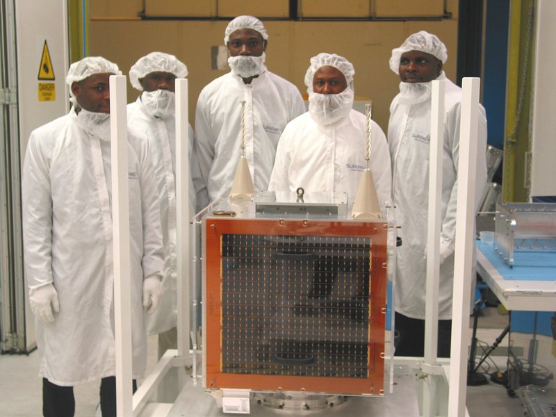

NigeriaSat-1
On 26 September 2003 Nigeria launched its $13 million national satellite NigeriaSat-1 in Plesetsk, Russia under a seven-nation constellation being handled by a Russian firm, Cosmos. Nigeriasat-1 is a low earth orbit micro satellite for disaster monitoring looking spacecraft, 5-year target design life-span orbit 700km. The launching of the National Satellite, which started development in November 2001, had been postponed from July 2003 because the Russian Space Agency had to launch a military satellite during that period. NigeriaSat-1 is one of five satellites which will make up a network called the Disaster Monitoring Constellation. The other partners in the international consortium are UK, China, Algeria, Turkey, Thailand and Vietnam. Each satellite belongs to one country, but they will share information with each other when disaster monitoring is needed. The Disaster Monitoring Constellation satellites, which cost less than $10 million each, are built by a British-based company, Surrey Satellite Technology, which has also trained technicians from Nigeria and some of the other countries involved. The processed images from the DMC will be distributed to relief teams by the Reuters AlterNet Foundation. The Reuters Foundation launched AlertNet in 1997 to help the work of relief professionals around the world.
NigeriaSat-1 has 3 spectral bands namely; Green: 0.52-0.62µm, Red: 0.63-0.69 µm and NIR:
0.76-0.9 µm. It is one of the Disaster Monitoring Constellation (DMC) satellites and has a swath width of 600km
and revisit cycle of 3-5 days. It has spectral resolution comparable to SPOT XS and spatial resolution comparable
to Landsat TM. The camera is operated in two banks and used to produce images with approximately 32 m ground
sampling distance (spatial resolution), across a swath width of approximately 600 x 600 km.
The Institute comprises of the Department of Space Science and Department of Aerospace Engineering Systems,
with programmes drawn from the specialized studies in Space Sciences, Engineering, Mathematics, Computerization,
and Technology Innovations leading to the award of Master of Science (MSc.) and Doctor of Philosophy (PhD) degree.
The combination of these characteristics implies that NigeriaSat-1 has great potentials for
forestry monitoring. With this satellite in space, the problem of data access for forest monitoring is no longer
there and the time is now ripe for utilization of space acquired information in natural resources management.
However, there is an urgent need for capacity building in space science technology applications, which is
currently below the critical mass, if the country is to derive maximum benefit from NigeriaSat-1.
The epoch making event drew ovation as well as bewilderment from many people. To the skeptics, it was seen as one
of those foolhardy events resulting from misplaced priorities and one that was going to be the first and the last
of its type. After three years of near-flawless operation in orbit, and delivery of over 3000 images that have
been utilized locally and internationally, our highly elated President has not only commended the National
Space Research and Development Agency (NASRDA) for the monumental success of NigeriaSat-1 but has also directed
the manufacture of two other satellites, a communications satellite - NigComSat-1 and a second earth observation
satellite - NigeriaSat-2; the latter is expected to replace NigeriaSat-1.
The programmes provide students with training and skills in analysis, designs and monitoring of space systems.
Human centred design and development studies are incorporated into every facet of learning at the Institute to
emphasize the role of space science and technology in achieving the sustainable development goals in Africa.

